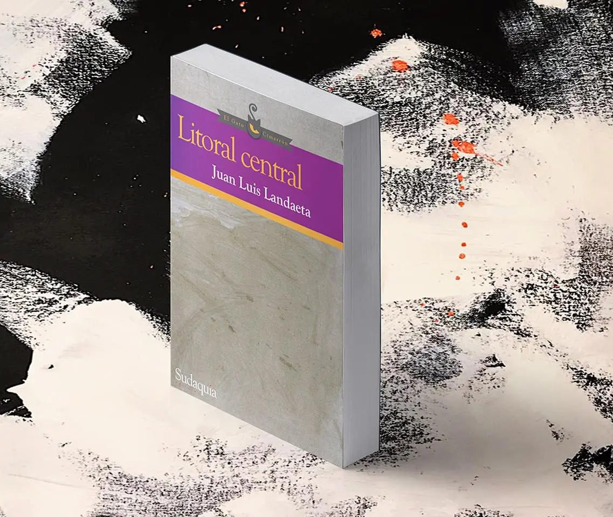

Although the poems included in this volume are full of specific geographical references, these tend to be altered until they achieve a rarefied nature that does not allow us to fully cling to them. Throughout the book Landaeta seems to ask himself how it is possible to narrate a violence that does not correspond to the categories we have historically created to describe it: wars, battles, revolutions. Despite the difficulty that this poses, it becomes necessary to tell it somehow, to integrate it into the symbolic. How can this be done? Landaeta builds a parallel, distorted universe that revolves around a hostile and monumental loss, but without describing it directly—instead he articulates it periphrastically, using a kind of left-handed logic.
No hay erotismo sin levedad —una cierta ingravidez de los cuerpos al tocarse— así como tampoco hay palabra sin silencio. Ambos, levedad y silencio, fundan un espacio de significaciones y sentidos indispensables para comunicarnos con ese otro que nos ama o nos escucha (y hace, a veces, las dos cosas). Desde ese espacio escribe Juan Luis Landaeta La conocida herencia de las formas.
A esta exactitud nos invita la escritura de Juan Luis Landaeta: una exactitud que no oculta la emoción, sino que busca realzar sus bordes. Así, se asegura de que cada uno de los poemas retenga algo de fuerza gravitacional, como si se tratara de cuerpos independientes, que ya no pertenecieran a él ni a nadie. Y qué más, a la postre, se puede pedir de un libro de poesía.

Litoral central, de Juan Landaeta, transcurre verbalmente bajo una tormenta solar que decanta su palabra y la desintegra hasta el despojo y el descentramiento. Hay nostalgia y lirismo por lo que se pierde en la quema, y tal vez la figura de un pintor (¿será Armando Reverón?) que se disuelve en lo blanco con sus palmeras hacia el pasado. El trópico se aproxima a su borde, y simula llegar a su fin con estos versos.
Atardecido en nuestra tarde, Landaeta viene a cumplir las labores necesarias del des-tiempo para atar los varios tiempos, y los lugares disímiles, en un mismo nudo de luz. En su Litoral Central también se hace cifra vívida este verso de Fernando Paz Castillo: “Las cosas y los nombres/ son símbolos confusos/ que acompañan al hombre en su destierro/ en su andar de adivino/ entre alboradas.”